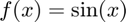
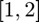
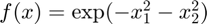
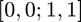
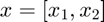
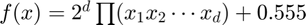
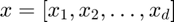
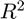
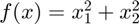
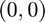

cubMC_g
Monte Carlo method to evaluate a multidimensional integral
Contents
Syntax
[Q,out_param] = cubMC_g(f,hyperbox)
Q = cubMC_g(f,hyperbox,measure,abstol,reltol,alpha)
Q = cubMC_g(f,hyperbox,'measure',measure,'abstol',abstol,'reltol',reltol,'alpha',alpha)
[Q out_param] = cubMC_g(f,hyperbox,in_param)
Description
[Q,out_param] = cubMC_g(f,hyperbox) estimates the integral of f over hyperbox to within a specified generalized error tolerance, tolfun = max(abstol, reltol*| I |), i.e., | I - Q | <= tolfun with probability at least (1 - alpha), where abstol is the absolute error tolerance, and reltol is the relative error tolerance. Usually the reltol determines the accuracy of the estimation, however, if | I | is rather small, then abstol determines the accuracy of the estimation. Input f is a function handle that accepts an n x d matrix input, where d is the dimension of the hyperbox, and n is the number of points being evaluated simultaneously.
When measure is 'uniform', 'uniform box', 'normal' or 'Gaussian', the input hyperbox is a 2 x d matrix, where the first row corresponds to the lower limits and the second row corresponds to the upper limits. When measure is 'uniform ball' or 'uniform sphere', the input hyperbox is a vector with d+1 elements, where the first d values correspond to the center of the ball and the last value corresponds to the radius of the ball. For these last two measures, a user can optionally specify what transformation should be used in order to get a uniform distribution on a ball of sphere. When measure is 'uniform ball_box', the box-to-ball transformation, which gets a set of points uniformly distributed on a ball from a set of points uniformly distributed on a box, will be used. When measure is 'uniform ball_normal', the normal-to-ball transformation, which gets a set of points uniformly distributed on a ball from a set of points normally distributed on the space, will be used. Similarly, the measures 'uniform sphere_box' and 'uniform sphere_normal' can be defined. The default transformations are the box-to-ball and the box-to-sphere transformations, depending on the region of integration.
Q = cubMC_g(f,hyperbox,measure,abstol,reltol,alpha) estimates the integral of function f over hyperbox to within a specified generalized error tolerance tolfun with guaranteed confidence level 1-alpha using all ordered parsing inputs f, hyperbox, measure, abstol, reltol, alpha, fudge, nSig, n1, tbudget, nbudget, flag. The input f and hyperbox are required and others are optional.
Q = cubMC_g(f,hyperbox,'measure',measure,'abstol',abstol,'reltol',reltol,'alpha',alpha) estimates the integral of f over hyperbox to within a specified generalized error tolerance tolfun with guaranteed confidence level 1-alpha. All the field-value pairs are optional and can be supplied in different order. If an input is not specified, the default value is used.
[Q out_param] = cubMC_g(f,hyperbox,in_param) estimates the integral of f over hyperbox to within a specified generalized error tolerance tolfun with the given parameters in_param and produce output parameters out_param and the integral Q.
Input Arguments
- f --- the integrand.
- hyperbox --- the integration hyperbox. The default value is [zeros(1,d); ones(1,d)], the default d is 1.
- in_param.measure --- the measure for generating the random variable, the default is 'uniform'. The other measures could be handled are 'uniform box', 'normal'/'Gaussian', 'uniform ball'/'uniform ball_box'/'uniform ball_normal' and 'uniform sphere'/'uniform sphere_box'/'uniform sphere_normal'. The input should be a string type, hence with quotes.
- in_param.abstol --- the absolute error tolerance, the default value is 1e-2.
- in_param.reltol --- the relative error tolerance, the default value is 1e-1.
- in_param.alpha --- the uncertainty, the default value is 1%.
Optional Input Arguments
- in_param.fudge --- the standard deviation inflation factor, the default value is 1.2.
- in_param.nSig --- initial sample size for estimating the sample variance, which should be a moderate large integer at least 30, the default value is 1e4.
- in_param.n1 --- initial sample size for estimating the sample mean, which should be a moderately large positive integer at least 30, the default value is 1e4.
- in_param.tbudget --- the time budget to do the estimation, the default value is 100 seconds.
- in_param.nbudget --- the sample budget to do the estimation, the default value is 1e9.
- in_param.flag --- the value corresponds to parameter checking status:
- 0 not checked
- 1 checked by meanMC_g
- 2 checked by cubMC_g
Output Arguments
- Q --- the estimated value of the integral.
- out_param.n --- the sample size used in each iteration.
- out_param.ntot --- total sample used, including the sample used to convert time budget to sample budget and the sample in each iteration step.
- out_param.nremain --- the remaining sample budget to estimate I. It was calculated by the sample left and time left.
- out_param.tau --- the iteration step.
- out_param.hmu --- estimated integral in each iteration.
- out_param.tol --- the reliable upper bound on error for each iteration.
- out_param.kurtmax --- the upper bound on modified kurtosis.
- out_param.time --- the time elapsed in seconds.
- out_param.var --- the sample variance.
- out_param.exit --- the state of program when exiting:
- 0 success
- 1 Not enough samples to estimate the mean
- 10 hyperbox does not contain numbers
- 11 hyperbox is not 2 x d when measure is 'uniform' or 'normal'
- 12 hyperbox is only a point in one direction when measure is 'uniform' or 'normal'
- 13 hyperbox is infinite when measure is 'uniform'
- 14 hyperbox is not doubly infinite when measure is 'normal'
- 15 hyperbox has an infinite coordinate for the center of the ball or sphere or a infinite radius for the ball or sphere
- 16 The radius of the ball or sphere is a non-positive real number
- 18 Hyperbox not 1 x (d+1) when measure is 'uniform ball' or 'uniform sphere'
- 19 The dimension of the sphere is smaller than 2
Guarantee
This algorithm attempts to calculate the integral of function f over a hyperbox to a prescribed error tolerance tolfun = max(abstol, reltol |I|) with guaranteed confidence level 1-alpha. If the algorithm terminates without showing any warning messages and provides an answer Q, then the following inequality would be satisfied:
Pr(| Q - I | <= tolfun) >= 1-alpha.
The cost of the algorithm, N_tot, is also bounded above by N_up, which is a function in terms of abstol, reltol, nSig, n1, fudge, kurtmax, beta. And the following inequality holds:
Pr (N_tot <= N_up) >= 1-beta.
Please refer to our paper for detailed arguments and proofs.
Examples
Example 1
Estimate the integral with integrand  over the interval  with default parameters.
f = @(x) sin(x); interval = [1;2];
Q = cubMC_g(f,interval,'uniform',1e-3,1e-2);
exactsol = 0.9564;
check = double(abs(exactsol-Q) < max(1e-3,1e-2*abs(exactsol)))
check =
1
Example 2
Estimate the integral with integrand  over the hyperbox , where  is a vector.
f = @(x) exp(-x(:,1).^2-x(:,2).^2); hyperbox = [0 0;1 1];
Q = cubMC_g(f,hyperbox,'uniform',1e-3,0);
exactsol = 0.5577;
check = double(abs(exactsol-Q) < 1e-3)
check =
1
Example 3
Estimate the integral with integrand  over the hyperbox [zeros(1,d); ones(1,d)], where  is a vector.
d = 3; f = @(x) 2^d*prod(x,2)+0.555; hyperbox = [zeros(1,d); ones(1,d)]; in_param.abstol = 1e-3;in_param.reltol=1e-3; Q = cubMC_g(f,hyperbox,in_param); exactsol = 1.555; check = double(abs(exactsol-Q) < max(1e-3,1e-3*abs(exactsol)))
check =
1
Example 4
Estimate the integral with integrand in , where is a vector.
f = @(x) exp(-x(:,1).^2-x(:,2).^2); hyperbox = [-inf -inf;inf inf];
Q = cubMC_g(f,hyperbox,'normal',0,1e-2);
exactsol = 1/3;
check = double(abs(exactsol-Q) < max(0,1e-2*abs(exactsol)))
check =
1
Example 5
Estimate the integral with integrand  in the disk with center  and radius 1, where is a vector.
f = @(x) x(:,1).^2+x(:,2).^2; hyperbox = [0,0,1]; Q = cubMC_g(f,hyperbox,'uniform ball','abstol',1e-3,'reltol',1e-3); exactsol = pi/2; check = double(abs(exactsol-Q) < max(1e-3,1e-3*abs(exactsol)))
check =
1
See Also
References
[1] Fred J. Hickernell, Lan Jiang, Yuewei Liu, and Art B. Owen, "Guaranteed conservative fixed width confidence intervals via Monte Carlo sampling," Monte Carlo and Quasi-Monte Carlo Methods 2012 (J. Dick, F. Y. Kuo, G. W. Peters, and I. H. Sloan, eds.), pp. 105-128, Springer-Verlag, Berlin, 2014. DOI: 10.1007/978-3-642-41095-6_5
[2] Sou-Cheng T. Choi, Yuhan Ding, Fred J. Hickernell, Lan Jiang, Lluis Antoni Jimenez Rugama, Da Li, Jagadeeswaran Rathinavel, Xin Tong, Kan Zhang, Yizhi Zhang, and Xuan Zhou, GAIL: Guaranteed Automatic Integration Library (Version 2.3.1) [MATLAB Software], 2020. Available from http://gailgithub.github.io/GAIL_Dev/
[3] Sou-Cheng T. Choi, "MINRES-QLP Pack and Reliable Reproducible Research via Supportable Scientific Software," Journal of Open Research Software, Volume 2, Number 1, e22, pp. 1-7, 2014.
[4] Sou-Cheng T. Choi and Fred J. Hickernell, "IIT MATH-573 Reliable Mathematical Software" [Course Slides], Illinois Institute of Technology, Chicago, IL, 2013. Available from http://gailgithub.github.io/GAIL_Dev/
[5] Daniel S. Katz, Sou-Cheng T. Choi, Hilmar Lapp, Ketan Maheshwari, Frank Loffler, Matthew Turk, Marcus D. Hanwell, Nancy Wilkins-Diehr, James Hetherington, James Howison, Shel Swenson, Gabrielle D. Allen, Anne C. Elster, Bruce Berriman, Colin Venters, "Summary of the First Workshop On Sustainable Software for Science: Practice and Experiences (WSSSPE1)," Journal of Open Research Software, Volume 2, Number 1, e6, pp. 1-21, 2014.
[6] Fang, K.-T., & Wang, Y. (1994). Number-theoretic Methods in Statistics. London, UK: CHAPMAN & HALL
[7] Lan Jiang, Guaranteed Adaptive Monte Carlo Methods for Estimating Means of Random Variables, PhD Thesis, Illinois Institute of Technology, 2016.
If you find GAIL helpful in your work, please support us by citing the above papers, software, and materials.